En s'appuyant sur le TP sur le perceptron non linéaire, ce TP a pour objet de mettre en œuvre la méthodologie pour la classification supervisée.
On utilise un perceptron dont la fonction d'activation est la tangente hyperbolique.
Ce que nous avons fait jusqu'à maintenant a consisté à mettre au point l'algorithme de descente de gradient stochastique pour calculer les poids d'un perceptron.
Disposant de cet algorithme, il s'agit maintenant de l'utiliser correctement. Ce n'est pas ce que nous fait dans le TP précédent. Pour cela, il y a quelques points méthodologiques à respecter impérativement :
Prendre en compte ces points permet de résoudre une tâche d'apprentissage supervisé.
Pour calculer les poids, on utilise l'algorithme ci-dessous. C'est l'algorithme du TP précédent dans lequel ce qui change est indiqué en rouge.
Comme précédemment, on utilise les notations suivantes : on a un jeu d'exemples constitué de N données d'entrées et des N valeurs de sortie attendues (étiquettes). Chaque donnée est décrite par P attributs.
On note Xi la iè donnée et Xi,j l'attribut j de la iè donnée. On note Yi la sortie attendue pour la iè donnée. Le iè exemple est donc le couple (Xi, Yi). X est une matrice dont chaque ligne correspond à une donnée et chaque colonne correspond à un attribut. Y est un vecteur.
On note N_train le nombre d'exemples composant X_train et N_test le nombre d'exemples composant X_test.
On note E_train l'erreur de prédiction mesurée sur (X_train, Y_train) et on note E_test l'erreur mesurée sur (X_test, Y_test). Ces erreurs sont estimées par la proportion d'exemples dont l'étiquette est mal prédite par le perceptron.
Le jeu d'exemples iris est constitué de fleurs d'iris appartenant à 3 espèces différentes : Setosa, Versicolor, Virginica. L'objectif est de déterminer l'espèce (= la classe) d'une fleur étant données ses caractéristiques : longueur et largeur des sépales, longueur et largeur des pétales. Chaque donnée est donc un vecteur de 4 nombres. La figure ci-dessous représente les exemples de ces trois classes dans le plan longueur x largeur des pétales : les Setosa en bleu, les Versicolor en vert, les Virginica en rouge.
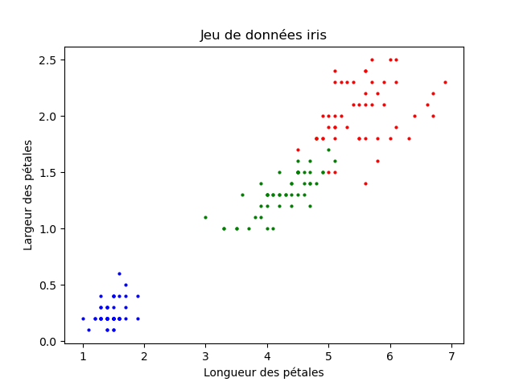
Puisqu'un perceptron permet de séparer deux classes seulement (pas trois, un perceptron réalise une tâche de classification binaire), dans le TP précédent et celui-ci on transforme ce problème à 3 classes en un problème à 2 classes. Ou plutôt, en 2 problèmes différents : si on veut prédire les Setosa par rapport aux deux autres espèces, le problème est linéairement séparable : si on veut prédire les Virginica par rapport aux deux autres, le problème n'est pas linéairement séparable : sur la figure ci-dessus, on voit que les rouges (Virgicinica) se mélangent avec les verts (Versicolor).
Dans le premier cas, il faut que l'étiquette à prédire indique si la donnée est un iris Setosa ou pas ; dans le second cas, il faut que l'étiquette indique si la donnée est un iris Virginica ou pas.
Dans ce TP, on va donc utiliser deux étiquettes, l'une indiquant que la donnée est un Setosa, l'autre que la donnée est un Virginica. Pour cela, on effectue ce qui suit :
N = len (iris.target) # le nombre d'exemples
Y_setosa = np.zeros ((N)) # Y_setosa est un tableau contenant N 0
Y_virginica = np.zeros ((N)) # idem pour Y_virginica
for i in range (len (iris.target)):
if iris.target [i] == 0:
Y_setosa [i] = 1
else:
Y_setosa [i] = 0
if iris.target [i] == 2:
Y_virginica [i] = 1
else:
Y_virginica [i] = 0
Ensuite, si on veut prédire les Setosa, on affecte Y_setosa à sorties. Si on veut prédire les Virginica, on affecte Y_virginica à sorties.
Nous devons ajouter les deux éléments liés de méthodologie à l'algorithme de calcul des poids vu lors du TP précédant.
Le partionnement du jeu d'exemples consiste à découper l'ensemble des exemples (X, Y) en deux sous-ensembles disjoints. Une proportion p d'exemples constitue (X_test, Y_test), les autres constituant (X_train, Y_train).
On peut s'y prendre de deux manières : le faire soi-même ou utiliser une fonction qui réalise ce découpage.
Je vous encourage très fortement à réaliser ce découpage vous-même car c'est très facile à faire (en particulier, les étudiants qui réalisent les TPs rapidement doivent effectuer ce découpage en codant eux-mêmes ce traitement : c'est juste une boucle).
Une fonction est disponible dans le paquetage sklearn qui réalise ce découpage. Elle se nomme train_test_split().
Pour l'utiliser, on écrit d'abord :
import numpy as np
graine = int ("Perceptron", base=36)%2**31
gnpa = np.random.default_rng (graine)
Strico senso, ces lignes ne sont pas indispensables pour effectuer le partionnement du jeu d'exemples. Ces lignes garantissent qu'à chaque fois que vous lancez votre programme, il partitionne le jeu d'exemples exactement de la même manière. C'est un point important sur lequel nous revenons plus bas.
Maintenant, on peut partitionner le jeu d'exemples. On fait comme suit. Supposons que p=0,2, on écrit :
from sklearn.model_selection import train_test_split X_train, X_test, Y_train, Y_test = train_test_split (X, Y, test_size = 0.2, random_state = np.random.RandomState (graine))
On a désormais partitionné le jeu d'exemples (X, Y) en un jeu d'entraînement (X_train, Y_train) et un jeu d'exemples (X_test, Y_test). Le premier est composé de 80% des exemples de (X, Y), le second est composé des 20% restants. Sur la figure ci-dessous, j'indique avec des points plus gros les exemples de test. Il faut bien garder à l'esprit que ces exemples ne sont pas utilisés pour calculer les poids, seuls les petits points le sont.
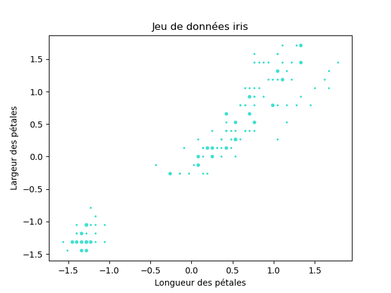
Si vous voulez reproduire ce graphique avec des gros points et des petits, il faut vous inspirez de la fonction debut_figure() : dans la fonction scatter(), le paramètre s = 2 indique la surface des points. Il suffit donc d'afficher les exemples d'entraînement avec s = 2 et les exemples de test avec une valeur de s plus grande.
Pour parcourir aléatoirement les exemples, il suffit d'égrener leurs indices dans un ordre aléatoire. Pour cela, on peut écrire :
N_train = len (Y_train) permutation = gnpa.choice (np.arange (N_train), N_train, replace = False)
Il faut avoir préalablement importer le paquetage numpy.
permutation contient une permutation des entiers de 0 à N_train - 1.
Ensuite dans le corps de la boucle, il suffit de remplacer la variable i par permutation [i] et les exemples seront parcourus dans un ordre aléatoire. En calculant une nouvelle permutation à chaque itération de la DGS, le parcours des exemples d'entraînement sera différent à chaque itération de la DGS.
Mettre en œuvre toute cette démarche sur le jeu de données iris utilisé dans le TP précédent.
Attention : vous entrez dans la manipulation d'un type d'algorithmes qu'il n'est pas toujours facile de faire fonctionner comme on le voudrait. Quand ça ne marche pas, il faut bien réfléchir à ce que l'on fait, vérifier que le programme fait bien ce que l'on croit, ou espére, qu'il fait : il faut mener l'enquête jusqu'à comprendre ce qui ne va pas, le corriger et le faire fonctionner. En particulier, déterminer quand il faut arrêter les itérations de la DGS n'est pas si simple qu'on pourrait l'espérer. On voit cela maintenant.
On va commencer par calculer les poids d'un perceptron qui sépare les Setosa des deux autres espèces : ce problème est linéairement séparable, ce doit être facile. On va donc utiliser les étiquettes stockées dans Y_setosa.
Rédigez votre programme en mettant bout à bout tout ce que j'ai expliqué. Vous itérez tant que l'erreur de test E_test diminue.
Pour vous donner quelques points de repères : au bout de quelques itérations, E_test ne diminue plus donc le programme s'arrête. E_train et E_test sont non nuls. Les poids correspondent à cette droite :
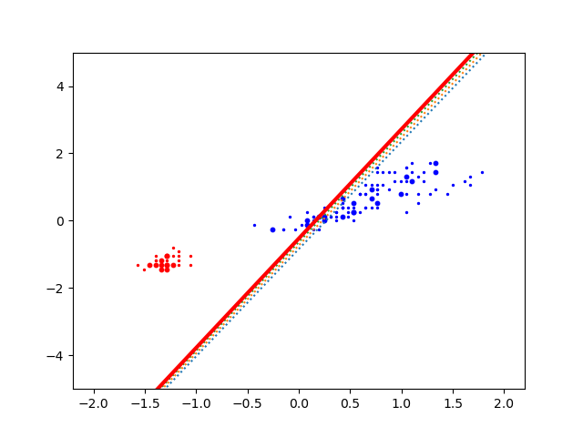
Si vous êtes étonné ou déçu, c'est normal : on s'attend à ce que le perceptron prédise correctement la classe et il ne le fait pas. Pourtant, ça devrait marcher. Avant de lire la suite, il est utile de réfléchir à ce qui peut ne pas bien se passer.
Maintenant que vous avez réfléchi pendant plusieurs minutes, vous pouvez lire la suite. Néanmoins, si vous avez eu une ou des idées de ce qui peut ne pas bien fonctionner et causer cet étonnement ou cette déception, avant de lire la suite, testez vos idées : modifiez votre programme et voyez si ça améliore le résultat.
La raison de l'échec est que la DGS s'est arrêtée trop tôt. Les poids du perceptron sont corrigés en utilisant le jeu d'entraînement, pas le jeu de test. Aussi, ce n'est pas parce que l'on modifie les poids que l'erreur de test diminue. Ce n'est pas parce E_test ne diminue pas d'une itération à la suivante qu'il ne pourrait pas le faire si on itère un peu plus car à chaque itération, les poids sont corrigés à l'aide des exemples d'entraînement et cela peut faire diminuer E_test.
Pour ne pas s'arrêter trop tôt, on pourrait se dire que si E_test ne diminue pas, on va encore réaliser 10 itérations (10 est juste une valeur prise en exemple) et si décidément E_test ne diminue pas, on s'arrête.
En pratiquant ainsi, mon programme effectue une vingtaine d'itérations et trouve finalement cette droite :
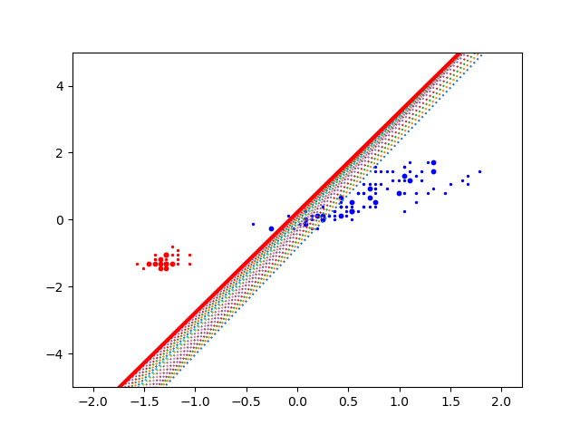
Comparons-la à la précédente : c'est mieux. Par ailleurs, si votre programme affiche E_test à chaque itération du tant-que de la DGS, vous pouvez constater qu'après avoir stagné, elle a continué de diminuer.
On est sur la bonne voie. Si j'autorise E_test à stagner encore plus longtemps, j'obtiens la séparation des deux classes :
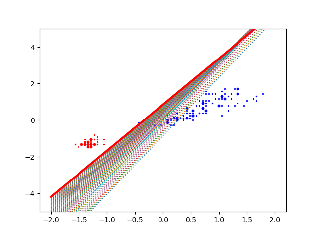
On voit que l'un des exemples bleus est mal prédit : c'est un exemple d'entraînement aussi la DGS n'en tient pas compte pour s'arrêter : seuls les exemples de test sont utilisés pour déterminer l'arrêt du tant-que.
Si cet exemple était dans le jeu de test, les itérations se poursuivraient.
Si on continue encore les itérations, cet exemple d'entraînement est bien prédit lui-aussi car les poids continuent d'être corrigés. J'obtiens cela :
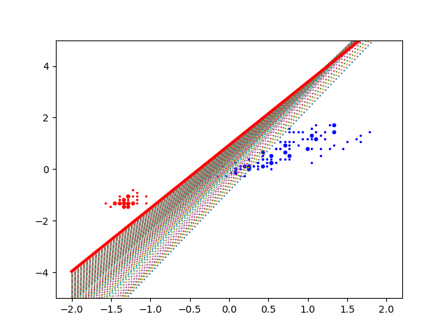
On considère maintenant le problème de prédire les Virginica par rapport aux autres iris. Pour cela, vous utilisez les étiquettes de Y_virginica.
Refaites tout ce que l'on vient de faire avec ces étiquettes.
Dans les mêmes conditions que ci-dessus, j'obtiens les 4 figures ci-dessous :
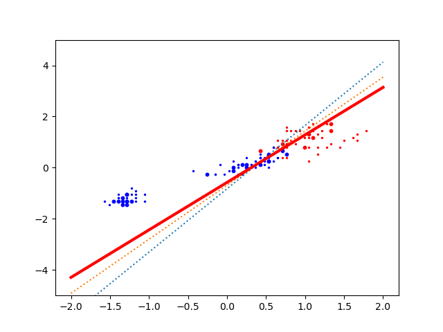
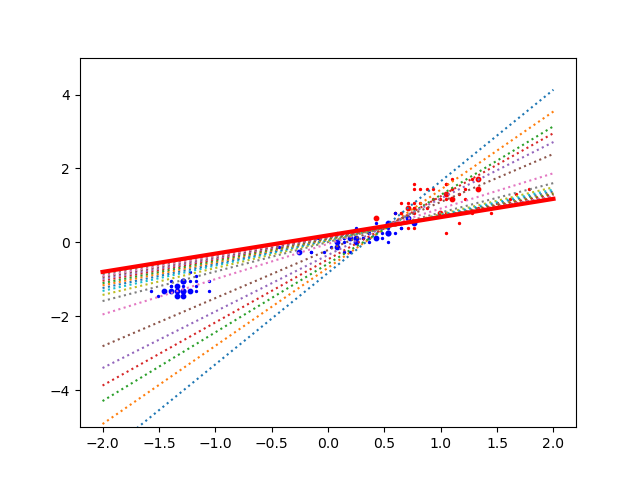
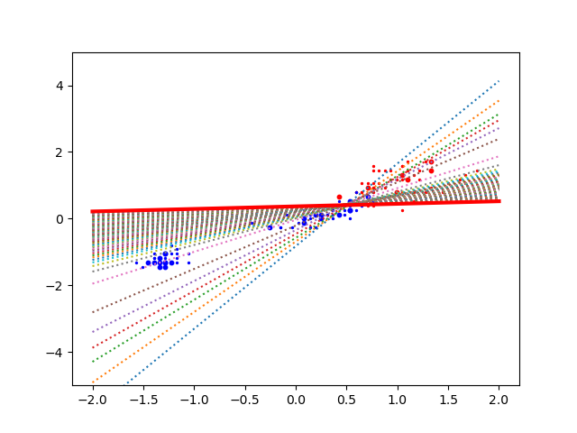
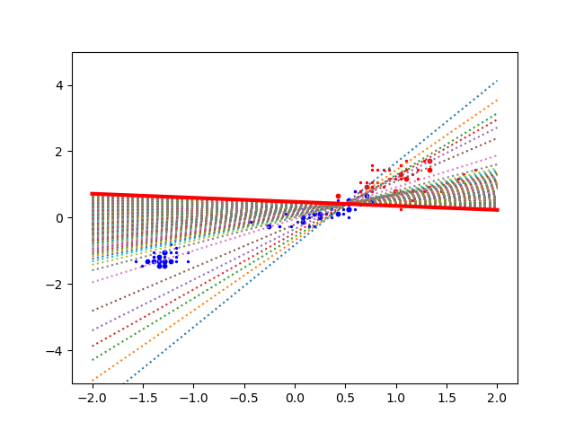
On pourrait se dire qu'après tout, pourquoi compliquer les choses et pourquoi ne pas tout simplement réaliser 100 itérations (par exemple) du corps de la boucle tant-que. Modifiez votre programme pour le faire et exécutez-le. Il est intéressant de tracer E_train et E_test au fil des itérations. J'obtiens cela :
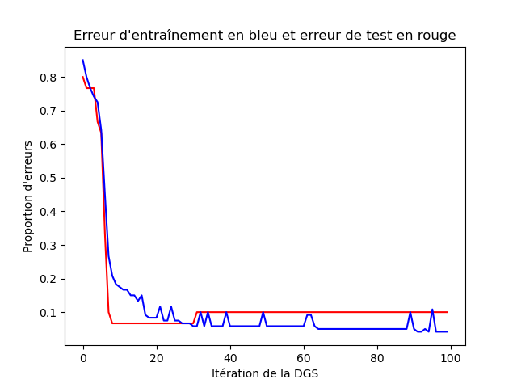
Sur ce graphique, on voit qu'au bout d'une trentaine d'itérations, E_test augmente ! Cela signifie que l'on a fait trop d'itérations : le perceptron est en situation de sur-apprentissage, situation qu'il faut impérativement éviter.
Conclusion : comme on ne sait jamais à l'avance quand le sur-apprentissage va survenir, on ne peut pas faire de boucle pour et on a besoin d'une boucle tant-que. Et savoir quand arrêter cette boucle tant-que n'est pas si simple.
Lorsque l'on utilise un programme qui utilise des nombres aléatoires, il faut impérativement faire en sorte que le résultat soit reproductible. Pour cela, il faut insérer un mécanisme qui garantit que l'on peut ré-exécuter le programme et que son comportement sera le même et qu'il fournira le même résultat à chaque exécution. Si on ne le fait pas, le programme peut donner des résultats différents à chaque exécution. C'est ennuyeux pour deux raisons :
Bien entendu, ce mécanisme qui permet la reproductibilité du comportement du programme n'empêche pas que le programme se comporte différemment à chacune de ses exécutions si on le souhaite. Ce que l'on veut, c'est maîtriser le comportement aléatoire du programme, pas l'empêcher.
Dans un ordinateur, les nombres aléatoires ne sont pas générés de manière aléatoire, bien au contraire. Ils sont générés en utilisant une formule de récurrence qui produit un flux de nombres qui semblent aléatoires au fil de ses itérations. Pour être précis, on parle de nombres pseudo-aléatoires car justement ils ne sont pas aléatoires mais engendrés de manière très précise pour que la suite de nombres ainsi générée ait toutes les caractéristiques qu'aurait une séquence de nombres effectivement aléatoires.
Dans tout raisonnement par récurrence, on a une règle qui permet de calculer le terme suivant et il y a le premier terme qui est fixé. Dans un générateur de nombres pseudo-aléatoires, la récurrence est initialisée à l'aide d'une graine qui est un simple nombre entier ; vous prenez le nombre que vous voulez, mais vous vous en rappelez.
Plus haut, on a effectué l'instruction graine = int ("Perceptron", base=36)%2**31. C'est une manière un peu sophistiquée de calculer une graine ; on pourrait tout aussi bien écrire graine = 123. En effet, int ("Perceptron", base=36)%2**31 transforme une chaîne de caractères en un entier.
Très concrétement, tout cela se traduit dans votre programme par l'ajout de :
graine = int ("Perceptron", base=36)%2**31 # ou graine = un entier
gnpa = np.random.default_rng (graine)
Il faut placer cette instruction le plus tôt possible dans votre programme. Il faut avoir fait import numpy as np auparavant. Vous pouvez initialiser la graine juste après.
Un petit exemple de son effet. gnpa.integers (a, b) génère un nombre compris entre -10 et 10. Si vous exécutez ce programme :
import numpy as np
print ("5 nombres pseudo-aléatoires :")
graine = 123
gnpa = np.random.default_rng (graine)
for i in range(5):
print (gnpa.integers (-10, 10))
print ("5 autres nombres pseudo-aléatoires :")
gnpa = np.random.default_rng (456)
for i in range(5):
print (gnpa.integers (-10, 10))
print ("Les 5 premiers à nouveau :")
gnpa = np.random.default_rng (graine)
for i in range(5):
print (gnpa.integers (-10, 10))
vous obtenez la sortie :
5 nombres pseudo-aléatoires : -10 3 1 -9 8 5 autres nombres pseudo-aléatoires : -3 -1 -1 -2 -10 Les 5 premiers à nouveau : -10 3 1 -9 8
Comme vous utilisez les mêmes graines que moi, vous obtenez le même résultat. Si vous changez la valeur affectée à graine, vous obtiendrez d'autres nombres.
En conclusion, ajoutez l'initialisation de la graine dans votre programme. Ainsi, le partitionnement du jeu d'exemples entre les exemples d'entraînement et les exemples de test sera toujours le même. Si vous voulez changer ce partionnement, changez la valeur de la graine.
Comparez le résultat obtenu en exécutant votre programme avec des graines différentes.
Il y a trois classes/espèces d'iris. Un perceptron peut seulement distinguer deux classes. En utilisant deux perceptrons qui prédisent chacun une certaine classe et en combinant leurs prédictions pour une certaine donnée, pouvez-vous prédire les 3 classes ? Si oui faites-le. Sinon, réfléchissez encore un peu.
À la suite de ce que l'on a fait plus haut, les quelques lignes suivantes peuvent être vous être utiles :
Y_versicolor = np.zeros ((N))
for i in range (len (iris.target)):
if iris.target [i] == 1:
Y_versicolor [i] = 1
else:
Y_versicolor [i] = 0
Le source de votre programme doit respecter les points suivants :
Pour finir, vous m'envoyez votre/vos script(s) par email, en mettant votre binôme en cc.